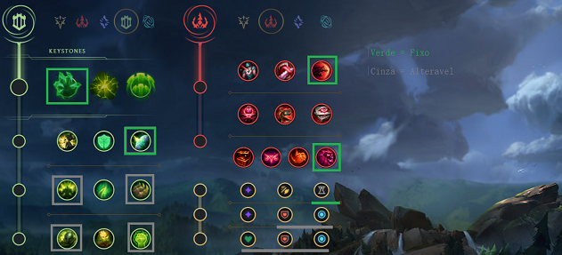
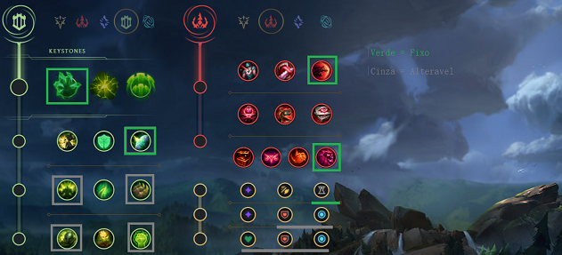
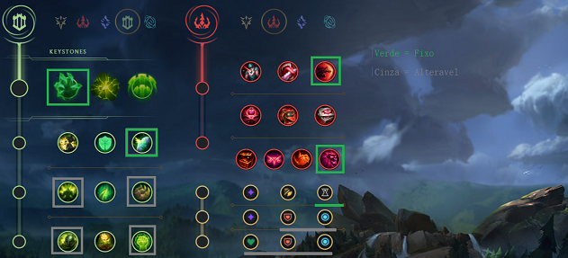

Runas


 



Conquistador
Conquistador: Talvez a runa mais utilizada e a melhor nessa pré season e provavelmente na próxima temporada(13). A runa do Conquistador pode ser usada quando se tem um time muito tank ou contra bonecos que buildem bastante vida. Como as skills do Kassadin concedem 2 stacks do Conquistador, a runa consegue ser muito viável na grande maioria das partidas nessa próxima season, graças aos novos itens e pela durabilidade que todos os campeões do jogo possuem hoje em dia.
Fleet
Pezinho ou Fleet(chame como quiser): Uma runa que eu particularmente amo usar nas partidas, mas infelizmente está muito nerfada e poucos Kassadin players usam hoje em dia. A runa de Fleet funciona basicamente para lhe garantir um sustain na sua lane phase contra campeões q te dão muito poke ou caso vc queira só ficar safe na lane, mesmo se vc não se garantir com o campeão. Eu indico essa escolha de runa pra aqueles players de Kassadin inexperientes que não tem mt noção de resistência e dano do personagem, e como sobreviver na lane phase mais ou menos até o nível 11.
Sub-Runas
Sub-Runas: As sub-runas do Kassadin dependem muito do seu estilo de jogo ou talvez até do conhecimento sobre o boneco, vou mostrar mais abaixo para que serve a escolha de runa de cada uma.
-Presença de Espirito: Sem dúvidas, a melhor escolha de sub runas para o campeão, caso você vá usar a árvore de precisão.
-Tenacidade: Única runa viável entre as outras 3 da árvore do meio, sem discussão.
-Golpe de Misericórdia/Até a morte: A escolha entre ambas é de que uma serve para uma matchup ou até mesmo jogo em que vc tenha q se arriscar muito e ficar muito exposto ao time inimigo para concluir o seu papel de assassino. Já o Golpe de Misericórdia é a melhor escolha para quando você pode fazer o seu papel de assassino tranquilamente durante as TeamFights, ou até mesmo quando você está em uma lane phase relativamente tranquila, com muita facilidade de ganhar do seu oponente em um 1v1.
Secundárias
As secundárias do Kassadin podem ser decididas de acordo com qual você acha a melhor para o suposto jogo ou caso queira jogar apenas para ganhar a lane phase.
DETERMINAÇÃO
-Golpe de escudo: Boa pra quando vc ta de conquistador e contra um time full ap e tem a necessidade do UP no Q de second.
-Condicionamento: Boa pra quando vc vai ficar um pouco mais "parrudo" no jogo ou seja, buildando frozen heart ou até msm uma banshee/mascara abyssal.
-Ventos Revigorantes: Boa pra quando vc ta contra um boneco de mt poke na lane ou lute contra o cara e n tome 100 a 0.
-Ossos Revestidos: Boa pra quando vc ta contra um boneco em q pode te dar 100 a 0 em algum momento da lane phase como por exemplo Zed ou Talon.
-Crescimento excessivo: Boa pra quando o time inimigo n tem mt Controle de Grupo e n precise de mais tenacidade além da propria sub-runa de tenacidade.
-Revitalizar: Não é uma runa mt boa mas é viavel de vez em nunca, somente quando estiver de Pezinho e dando max no seu Q de second.
-Inabalavel: Boa pra quando o time inimigo possui muito Controle de Grupo em q a sub-runa da Tenacidade não de conta sozinha, como por exemplo, caso tenha uma Ashe e Morgana na mesma partida.
DOMINAÇÂO
-Impacto Repentino: Uma das melhores seconds para o kassadin graças ao prock da runa no R do campeão
-Gosto de Sangue: Boa pra quando estiver de pezinho e vc queira aumentar um pouquinho da sua cura
-Ward Zumbi: Vc quase nunca vai ver alguem usando essa runa, mas caso vc seja uma pessoa em q ward mt e queira jogar o mais safe possivel, essa é uma runa até q viavel graças ao poder de habilidade em q ela vai te dar qnd um inimigo quebrar ela.
-Globulos Oculares: Consideravelmente usada, já q vc de kassadin sempre vai usar a lente vermelha, sempre em q quebrar uma ward vai ganhar poder de habilidade adicional.
-Caça Suprema: Melhor runa da pagina de dominação pro KASSADIN, sempre em q vc for usar essa arvore de runa vc tem q usa-la graças a ajuda na diminuição do CDR da sua ult.
